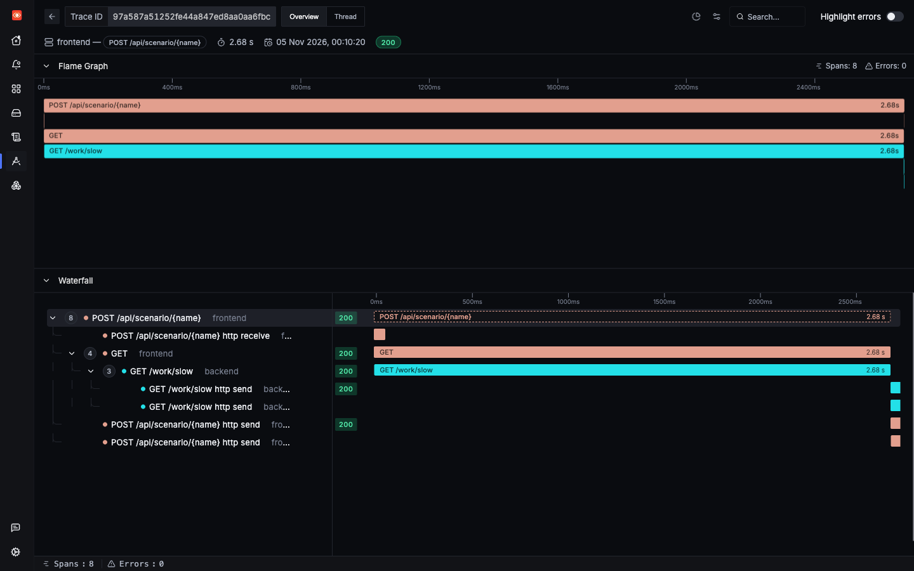

Incident 2 of 6
A latency spike
Nothing is failing, and yet the app feels slow. Errors are easy to spot. Slowness needs percentiles and a trace.
1Trigger it
The slow scenario makes the backend take 1 to 3 seconds. The load generator also includes it, in about 10% of healthy requests.
2Symptom
The call succeeds, but slowly. A saved run returned HTTP 200 after 2,683 ms, with no error anywhere. Averages hide this, so look at percentiles. The frontend's key operation in the 30-minute view:
| Operation | P50 | P95 | P99 | Calls |
|---|---|---|---|---|
POST /api/scenario/{name} | 29.45 ms | 1,756.22 ms | 2,772.21 ms | 8,897 |
Half of the requests finish in under 30 ms, and the slowest 1% take nearly 3 seconds. That gap is your symptom.
3Where to look
- Services, then frontend: the Latency chart and Key Operations table. Compare P50 with P99.
- Traces Explorer: find slow requests, then open one.
- The trace itself: find the span where the time went.

4Search
Find anything over a second. Remember that duration_nano is in nanoseconds.
That counts child spans too. Limit it to Server spans to count requests instead:
To see which route is responsible, aggregate. In the Traces Explorer, use the Table view with an aggregation and a group-by:
/work/slow stands out. Now narrow to that route:
5Evidence

GET /work/slow.Read it from the top down:
- Frontend Server span: 2,678.8 ms. Frontend Client span: 2,677.5 ms. So the frontend spends its time waiting.
- Backend Server span: 2,676.4 ms. So the time is in the backend.
GET /work/slowhas no real child spans: no database call, and no outgoing call.- A log with the same trace ID says
slow work for 2.67s.
The rule: follow the time downward until a span is long but its children are not. That span's own code is where the time went. Here, no children means the time is inside the handler, or in something not instrumented.
6Root cause
labs/lab2-sdk/app/backend.py lines 128–133128@app.get("/work/slow")
129def slow(ms: int = 0) -> dict:
130 delay = ms / 1000 if ms else random.uniform(1.0, 3.0)
131 log.info("slow work for %.2fs", delay)
132 time.sleep(delay)
133 return {"slept_s": round(delay, 3)}The handler sleeps. In a real app this could be a slow library call, a lock, or a loop. The point of the trace is that it takes you to this function without any guessing.
7Resolution
The real fix depends on what the code is doing. In this lab it is a deliberate sleep, so removing it is the fix. The reusable step is to make the blind spot visible with a child span, so the next person can see where the time goes:
def slow(ms: int = 0) -> dict:
delay = ms / 1000 if ms else random.uniform(1.0, 3.0)
log.info("slow work for %.2fs", delay)
- time.sleep(delay)+ with tracer.start_as_current_span("slow_work") as span:+ span.set_attribute("work.delay_s", delay)+ time.sleep(delay) return {"slept_s": round(delay, 3)}
Then re-run the search, and compare P99 before and after. Alert on a high percentile rather than the median: in this view P50 was only 29 ms, while P99 was nearly 3 seconds.
Check yourself: A backend span takes 2.67 s and has no child spans. What does that suggest?
Check yourself: The frontend shows P50 around 29 ms and P99 around 2.8 s. What does that tell you?